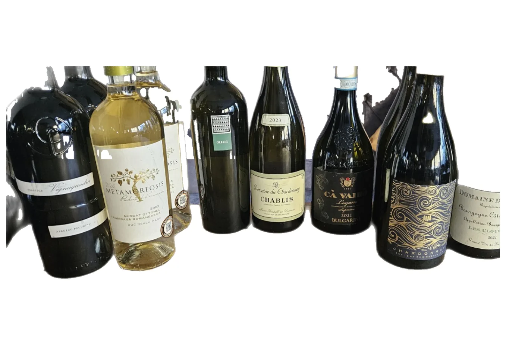
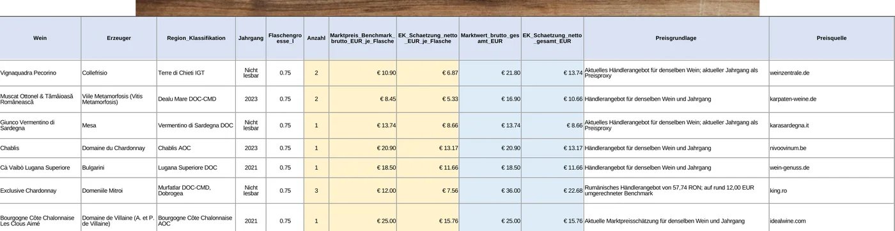
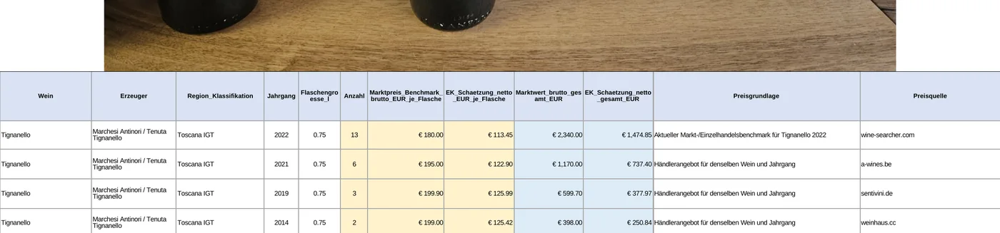

Fotos und Unterlagen
Bilder, Rechnungen, vorhandene Listen oder andere Bestandshinweise bilden den Ausgangspunkt.
Inventaraufnahme · Schadenfälle · Würzburg & Mainfranken
Gerade nach Brand-, Wasser- oder anderen Sachschäden müssen umfangreiche Bestände häufig aus Fotos, Rechnungen und vorhandenen Unterlagen rekonstruiert werden.
Ich unterstütze Sachverständige, Sanierungsunternehmen und Betriebe bei der strukturierten Erfassung: Positionen identifizieren, Mengen erfassen, Produktdaten ergänzen, recherchierbare Marktpreise dokumentieren und Quellen nachvollziehbar zuordnen.
Besonders für Sachverständige, Schadenregulierer und die Dokumentation nach einem Schaden.
Was erfasst wird
Das Ergebnis ist eine strukturierte Inventarliste, keine pauschale Sammelbewertung. Welche Felder sinnvoll sind, hängt vom Bestand ab. Typisch sind:
Ablauf
KI kann einen erheblichen Teil der Vorarbeit übernehmen. Die Liste wird trotzdem geprüft, bevor sie übergeben wird.
Bilder, Rechnungen, vorhandene Listen oder andere Bestandshinweise bilden den Ausgangspunkt.
Produkte und sichtbare Merkmale werden KI-gestützt vorgeschlagen und einer Position zugeordnet.
Erkannte Angaben werden manuell kontrolliert. Unsichere Stellen bleiben sichtbar.
Wo sinnvoll und möglich, werden aktuelle oder passende Vergleichspreise mit Quelle dokumentiert.
Produkte, Mengen, Merkmale und Quellen werden in einer einheitlichen Struktur zusammengeführt.
Als PDF, Excel oder in einem vereinbarten strukturierten Format, das sich weiterbearbeiten lässt.
Beispiel
Das folgende Beispiel zeigt einen Weinbestand. Derselbe Ablauf gilt für andere Bestände: Geräte, Lagerware, Gastronomieinventar oder gemischtes Betriebsinventar. Die Ausschnitte sind anonymisiert.

Ausgangspunkt können Fotos, vorhandene Listen, Rechnungen oder andere Unterlagen sein.

Erkennbare Produkte, Mengen und relevante Merkmale werden einer strukturierten Position zugeordnet.

Wo sinnvoll und recherchierbar, werden Markt- oder Vergleichspreise mit einer nachvollziehbaren Quelle dokumentiert.
| Gruppe | Positionen | Vergleichswert |
|---|---|---|
| Gruppe A | 18 | 12.400 € |
| Gruppe B | 9 | 27.850 € |
| Gruppe C | 24 | 8.150 € |
| Gruppe D | 11 | 21.600 € |
| Gesamtübersicht | 62 | 70.000 € |
Einzelpositionen können anschließend zu einer Gesamtübersicht zusammengeführt werden.
Die Zahlen in dieser Übersicht sind vereinfacht und dienen nur der Darstellung. Sie stammen nicht aus einem konkreten Versicherungsfall.
Erfassungsmethoden
Beide Wege können je nach Bestand und Auftrag sinnvoll sein. Der Unterschied liegt darin, wie gut sich einzelne Positionen später nachvollziehen lassen.
Pauschalisierung
Bei umfangreichen oder unübersichtlichen Beständen kann eine pauschale Einordnung schneller sein. Sie bildet jedoch Unterschiede zwischen einzelnen Produkten, Varianten, Jahrgängen oder hochwertigen Einzelpositionen nur eingeschränkt ab.
Einzelaufstellung
Bei einer strukturierten Einzelaufstellung werden erkennbare Positionen getrennt dokumentiert. Mengen, relevante Merkmale und recherchierbare Vergleichswerte können einzeln erfasst und mit Quellen belegt werden.
Eine Einzelaufstellung schafft vor allem Transparenz: differenzierte Produkte, hochwertige Ausreißer und unsichere Stellen bleiben erkennbar. Das erleichtert die spätere fachliche Prüfung.
Vereinfachtes Rechenbeispiel
Das folgende Zahlenbeispiel ist fiktiv. Es soll nur zeigen, dass eine grobe Pauschale Unterschiede übersehen kann, die in einer Einzelaufstellung sichtbar werden.
Das Rechenbeispiel dient ausschließlich zur Veranschaulichung der unterschiedlichen Erfassungsmethoden. Die tatsächliche Schadenhöhe oder Versicherungsleistung hängt unter anderem vom konkreten Bestand, Bewertungsmaßstab, Versicherungsvertrag sowie der Prüfung durch Versicherer oder Sachverständige ab.
Differenzierte Positionen
Eine Kiste ist nicht einfach eine Kiste.
Modell, Variante, Jahrgang, Ausführung und Stückzahl können den Wert einzelner Positionen erheblich verändern. Deshalb können erkennbare Unterschiede getrennt erfasst werden, statt alles unter einem Sammelwert zusammenzufassen.
Im Weinbeispiel unterscheiden sich Jahrgänge derselben Lage deutlich. Bei Maschinen, IT oder Gastronomieinventar gilt dasselbe Prinzip: scheinbar gleiche Gegenstände sind oft nicht gleichwertig.
Für die Schadenbearbeitung
Die Aufbereitung ersetzt keine fachliche Begutachtung. Sie kann jedoch die zeitaufwendige Erfassung, Recherche und Strukturierung umfangreicher Bestände vorbereiten.
Sichtbare Bestände werden Positionen zugeordnet, statt als unsortierte Bildmenge zu bleiben.
Gleiche oder nahe Varianten werden zusammengeführt, ohne Unterschiede zu verwischen.
Hersteller, Modell, Variante oder Jahrgang werden ergänzt, soweit sie erkennbar oder belegbar sind.
Vergleichspreise erhalten eine nachvollziehbare Grundlage, keine bloße Zahl ohne Herkunft.
Was nicht sicher identifizierbar ist, bleibt als unsicher markiert statt stillschweigend angenommen.
Tabelle und PDF so vorbereiten, dass die fachliche Bewertung darauf aufsetzen kann.
Weitere Anwendungsfälle
Auch unabhängig von einem Schaden eignet sich die strukturierte Erfassung für Unternehmen, die erstmals wissen möchten, was tatsächlich vorhanden ist.
Private Verarbeitung
Bei der Erkennung und Strukturierung großer Bestände können KI-Systeme einen erheblichen Teil der Vorarbeit übernehmen.
Für sensible Kunden- und Schadendaten kann die Verarbeitung auf eigener Infrastruktur erfolgen. Die Daten müssen dadurch nicht für jeden Analyseschritt an öffentliche KI-Dienste übertragen werden.
Objekte, Etiketten, Typenschilder und Text in Fotos oder Unterlagen vorschlagen.
Positionen grob einordnen und ähnliche Varianten gruppieren.
Merkmale, Mengen und erkennbare Produktangaben in Tabellenfelder überführen.
Produktvorschläge machen, die anschließend geprüft und bei Bedarf korrigiert werden.
KI unterstützt die Verarbeitung. Unsichere oder auffällige Positionen werden geprüft beziehungsweise gekennzeichnet. Eine fehlerfreie Erkennung wird nicht behauptet.
Häufige Fragen
Nein. Die Leistung umfasst Erfassung, Recherche und strukturierte Dokumentation. Eine fachliche Begutachtung oder verbindliche Wertermittlung bleibt, wo sie erforderlich ist, bei der zuständigen Sachverständigen oder dem zuständigen Sachverständigen.
Vorrangig für Schadenfälle nach Brand, Wasser oder anderen Sachschäden, wenn Bestände aus Fotos, Rechnungen und vorhandenen Unterlagen rekonstruiert werden müssen. Derselbe Ablauf eignet sich auch für undokumentierte Lager-, Gastronomie- oder Betriebsbestände.
Für eine erste Einschätzung reichen häufig einige repräsentative Fotos, vorhandene Listen, Rechnungen oder andere Unterlagen. Nicht jede Position muss vorab vollständig beschriftet sein.
Nicht für jeden Analyseschritt. Für sensible Kunden- und Schadendaten kann die Verarbeitung auf eigener Infrastruktur erfolgen. Unsichere oder auffällige Positionen werden geprüft oder gekennzeichnet.
Nein. Der Kostenschätzer ist auf Dokumentendigitalisierung und digitale Ablage ausgelegt. Inventar- und Schadenlisten werden nach Sichtung des Materials persönlich besprochen.
Für eine erste Einschätzung reichen häufig einige repräsentative Beispiele aus.